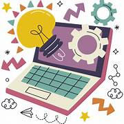
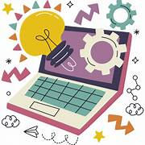
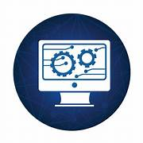
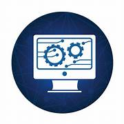

History of Computer
A computer might be described with deceptive simplicity as “an apparatus that performs routine calculations automatically.” Such a definition would owe its deceptiveness to a naive and narrow view of calculation as a strictly mathematical process. In fact, calculation underlies many activities that are not normally thought of as mathematical. Walking across a room, for instance, requires many complex, albeit subconscious, calculations. Computers, too, have proved capable of solving a vast array of problems, from balancing a checkbook to even—in the form of guidance systems for robots—walking across a room. Before the true power of computing could be realized, therefore, the naive view of calculation had to be overcome. The inventors who labored to bring the computer into the world had to learn that the thing they were inventing was not just a number cruncher, not merely a calculator. For example, they had to learn that it was not necessary to invent a new computer for every new calculation and that a computer could be designed to solve numerous problems, even problems not yet imagined when the computer was built. They also had to learn how to tell such a general problem-solving computer what problem to solve. In other words, they had to invent programming. They had to solve all the heady problems of developing such a device, of implementing the design, of actually building the thing. The history of the solving of these problems is the history of the computer. That history is covered in this section, and links are provided to entries on many of the individuals and companies mentioned. In addition, see the articles computer science and supercomputer. Early history Computer precursors The abacus The earliest known calculating device is probably the abacus. It dates back at least to 1100 bce and is still in use today, particularly in Asia. Now, as then, it typically consists of a rectangular frame with thin parallel rods strung with beads. Long before any systematic positional notation was adopted for the writing of numbers, the abacus assigned different units, or weights, to each rod. This scheme allowed a wide range of numbers to be represented by just a few beads and, together with the invention of zero in India, may have inspired the invention of the Hindu-Arabic number system. In any case, abacus beads can be readily manipulated to perform the common arithmetical operations—addition, subtraction, multiplication, and division—that are useful for commercial transactions and in bookkeeping. The abacus is a digital device; that is, it represents values discretely. A bead is either in one predefined position or another, representing unambiguously, say, one or zero. Analog calculators: from Napier’s logarithms to the slide rule Calculating devices took a different turn when John Napier, a Scottish mathematician, published his discovery of logarithms in 1614. As any person can attest, adding two 10-digit numbers is much simpler than multiplying them together, and the transformation of a multiplication problem into an addition problem is exactly what logarithms enable. This simplification is possible because of the following logarithmic property: the logarithm of the product of two numbers is equal to the sum of the logarithms of the numbers. By 1624, tables with 14 significant digits were available for the logarithms of numbers from 1 to 20,000, and scientists quickly adopted the new labor-saving tool for tedious astronomical calculations. Most significant for the development of computing, the transformation of multiplication into addition greatly simplified the possibility of mechanization. Analog calculating devices based on Napier’s logarithms—representing digital values with analogous physical lengths—soon appeared. In 1620 Edmund Gunter, the English mathematician who coined the terms cosine and cotangent, built a device for performing navigational calculations: the Gunter scale, or, as navigators simply called it, the gunter. About 1632 an English clergyman and mathematician named William Oughtred built the first slide rule, drawing on Napier’s ideas. That first slide rule was circular, but Oughtred also built the first rectangular one in 1633. The analog devices of Gunter and Oughtred had various advantages and disadvantages compared with digital devices such as the abacus. What is important is that the consequences of these design decisions were being tested in the real world. Digital calculators: from the Calculating Clock to the Arithmometer Calculating Clock Calculating Clock A reproduction of Wilhelm Schickard's Calculating Clock. The device could add and subtract six-digit numbers (with a bell for seven-digit overflows) through six interlocking gears, each of which turned one-tenth of a rotation for each full rotation of the gear to its right. Thus, 10 rotations of any gear would produce a “carry” of one digit on the following gear and change the corresponding display. In 1623 the German astronomer and mathematician Wilhelm Schickard built the first calculator. He described it in a letter to his friend the astronomer Johannes Kepler, and in 1624 he wrote again to explain that a machine he had commissioned to be built for Kepler was, apparently along with the prototype, destroyed in a fire. He called it a Calculating Clock, which modern engineers have been able to reproduce from details in his letters. Even general knowledge of the clock had been temporarily lost when Schickard and his entire family perished during the Thirty Years’ War. But Schickard may not have been the true inventor of the calculator. A century earlier, Leonardo da Vinci sketched plans for a calculator that were sufficiently complete and correct for modern engineers to build a calculator on their basis. Arithmetic Machine, or Pascaline Arithmetic Machine, or Pascaline The Arithmetic Machine, or Pascaline, a French monetary (nondecimal) calculator designed by Blaise Pascal c. 1642. Numbers could be added by turning the wheels (located along the bottom of the machine) clockwise and subtracted by turning the wheels counterclockwise. Each digit in the answer was displayed in a separate window, visible at the top of the photograph. The first calculator or adding machine to be produced in any quantity and actually used was the Pascaline, or Arithmetic Machine, designed and built by the French mathematician-philosopher Blaise Pascal between 1642 and 1644. It could only do addition and subtraction, with numbers being entered by manipulating its dials. Pascal invented the machine for his father, a tax collector, so it was the first business machine too (if one does not count the abacus). He built 50 of them over the next 10 years. Step Reckoner Step Reckoner A reproduction of Gottfried Wilhelm von Leibniz's Step Reckoner, from the original located in the Trinks Brunsviga Museum at Hannover, Germany. Turning the crank (left) rotated several drums, each of which turned a gear connected to a digital counter. In 1671 the German mathematician-philosopher Gottfried Wilhelm von Leibniz designed a calculating machine called the Step Reckoner. (It was first built in 1673.) The Step Reckoner expanded on Pascal’s ideas and did multiplication by repeated addition and shifting. Leibniz was a strong advocate of the binary number system. Binary numbers are ideal for machines because they require only two digits, which can easily be represented by the on and off states of a switch. When computers became electronic, the binary system was particularly appropriate because an electrical circuit is either on or off. This meant that on could represent true, off could represent false, and the flow of current would directly represent the flow of logic. Leibniz was prescient in seeing the appropriateness of the binary system in calculating machines, but his machine did not use it. Instead, the Step Reckoner represented numbers in decimal form, as positions on 10-position dials. Even decimal representation was not a given: in 1668 Samuel Morland invented an adding machine specialized for British money—a decidedly nondecimal system. Pascal’s, Leibniz’s, and Morland’s devices were curiosities, but with the Industrial Revolution of the 18th century came a widespread need to perform repetitive operations efficiently. With other activities being mechanized, why not calculation? In 1820 Charles Xavier Thomas de Colmar of France effectively met this challenge when he built his Arithmometer, the first commercial mass-produced calculating device. It could perform addition, subtraction, multiplication, and, with some more elaborate user involvement, division. Based on Leibniz’s technology, it was extremely popular and sold for 90 years. In contrast to the modern calculator’s credit-card size, the Arithmometer was large enough to cover a desktop. The Jacquard loom Calculators such as the Arithmometer remained a fascination after 1820, and their potential for commercial use was well understood. Many other mechanical devices built during the 19th century also performed repetitive functions more or less automatically, but few had any application to computing. There was one major exception: the Jacquard loom, invented in 1804–05 by a French weaver, Joseph-Marie Jacquard. Jacquard loom Jacquard loomJacquard loom, engraving, 1874. At the top of the machine is a stack of punched cards that would be fed into the loom to control the weaving pattern. This method of automatically issuing machine instructions was employed by computers well into the 20th century. The Jacquard loom was a marvel of the Industrial Revolution. A textile-weaving loom, it could also be called the first practical information-processing device. The loom worked by tugging various-colored threads into patterns by means of an array of rods. By inserting a card punched with holes, an operator could control the motion of the rods and thereby alter the pattern of the weave. Moreover, the loom was equipped with a card-reading device that slipped a new card from a pre-punched deck into place every time the shuttle was thrown, so that complex weaving patterns could be automated. What was extraordinary about the device was that it transferred the design process from a labor-intensive weaving stage to a card-punching stage. Once the cards had been punched and assembled, the design was complete, and the loom implemented the design automatically. The Jacquard loom, therefore, could be said to be programmed for different patterns by these decks of punched cards. For those intent on mechanizing calculations, the Jacquard loom provided important lessons: the sequence of operations that a machine performs could be controlled to make the machine do something quite different; a punched card could be used as a medium for directing the machine; and, most important, a device could be directed to perform different tasks by feeding it instructions in a sort of language—i.e., making the machine programmable. It is not too great a stretch to say that, in the Jacquard loom, programming was invented before the computer. The close relationship between the device and the program became apparent some 20 years later, with Charles Babbage’s invention of the first computer. The first computer By the second decade of the 19th century, a number of ideas necessary for the invention of the computer were in the air. First, the potential benefits to science and industry of being able to automate routine calculations were appreciated, as they had not been a century earlier. Specific methods to make automated calculation more practical, such as doing multiplication by adding logarithms or by repeating addition, had been invented, and experience with both analog and digital devices had shown some of the benefits of each approach. The Jacquard loom (as described in the previous section, Computer precursors) had shown the benefits of directing a multipurpose device through coded instructions, and it had demonstrated how punched cards could be used to modify those instructions quickly and flexibly. It was a mathematical genius in England who began to put all these pieces together. The Difference Engine Difference Engine Difference EngineThe completed portion of Charles Babbage's Difference Engine, 1832. This advanced calculator was intended to produce logarithm tables used in navigation. The value of numbers was represented by the positions of the toothed wheels marked with decimal numbers. Charles Babbage was an English mathematician and inventor: he invented the cowcatcher, reformed the British postal system, and was a pioneer in the fields of operations research and actuarial science. It was Babbage who first suggested that the weather of years past could be read from tree rings. He also had a lifelong fascination with keys, ciphers, and mechanical dolls. As a founding member of the Royal Astronomical Society, Babbage had seen a clear need to design and build a mechanical device that could automate long, tedious astronomical calculations. He began by writing a letter in 1822 to Sir Humphry Davy, president of the Royal Society, about the possibility of automating the construction of mathematical tables—specifically, logarithm tables for use in navigation. He then wrote a paper, “On the Theoretical Principles of the Machinery for Calculating Tables,” which he read to the society later that year. (It won the Royal Society’s first Gold Medal in 1823.) Tables then in use often contained errors, which could be a life-and-death matter for sailors at sea, and Babbage argued that, by automating the production of the tables, he could assure their accuracy. Having gained support in the society for his Difference Engine, as he called it, Babbage next turned to the British government to fund development, obtaining one of the world’s first government grants for research and technological development. Babbage approached the project very seriously: he hired a master machinist, set up a fireproof workshop, and built a dustproof environment for testing the device. Up until then calculations were rarely carried out to more than 6 digits; Babbage planned to produce 20- or 30-digit results routinely. The Difference Engine was a digital device: it operated on discrete digits rather than smooth quantities, and the digits were decimal (0–9), represented by positions on toothed wheels, rather than the binary digits that Leibniz favored (but did not use). When one of the toothed wheels turned from 9 to 0, it caused the next wheel to advance one position, carrying the digit just as Leibniz’s Step Reckoner calculator had operated. The Difference Engine was more than a simple calculator, however. It mechanized not just a single calculation but a whole series of calculations on a number of variables to solve a complex problem. It went far beyond calculators in other ways as well. Like modern computers, the Difference Engine had storage—that is, a place where data could be held temporarily for later processing—and it was designed to stamp its output into soft metal, which could later be used to produce a printing plate. Nevertheless, the Difference Engine performed only one operation. The operator would set up all of its data registers with the original data, and then the single operation would be repeatedly applied to all of the registers, ultimately producing a solution. Still, in complexity and audacity of design, it dwarfed any calculating device then in existence. The full engine, designed to be room-size, was never built, at least not by Babbage. Although he sporadically received several government grants—governments changed, funding often ran out, and he had to personally bear some of the financial costs—he was working at or near the tolerances of the construction methods of the day, and he ran into numerous construction difficulties. All design and construction ceased in 1833, when Joseph Clement, the machinist responsible for actually building the machine, refused to continue unless he was prepaid. (The completed portion of the Difference Engine is on permanent exhibition at the Science Museum in London.) The Analytical Engine Charles Babbage: Analytical Engine Charles Babbage: Analytical EngineA portion (completed 1910) of Charles Babbage's Analytical Engine. Only partially built at the time of his death in 1871, this portion contains the “mill” (functionally analogous to a modern computer's central processing unit) and a printing mechanism. While working on the Difference Engine, Babbage began to imagine ways to improve it. Chiefly he thought about generalizing its operation so that it could perform other kinds of calculations. By the time the funding had run out in 1833, he had conceived of something far more revolutionary: a general-purpose computing machine called the Analytical Engine. The Analytical Engine was to be a general-purpose, fully program-controlled, automatic mechanical digital computer. It would be able to perform any calculation set before it. Before Babbage there is no evidence that anyone had ever conceived of such a device, let alone attempted to build one. The machine was designed to consist of four components: the mill, the store, the reader, and the printer. These components are the essential components of every computer today. The mill was the calculating unit, analogous to the central processing unit (CPU) in a modern computer; the store was where data were held prior to processing, exactly analogous to memory and storage in today’s computers; and the reader and printer were the input and output devices. As with the Difference Engine, the project was far more complex than anything theretofore built. The store was to be large enough to hold 1,000 50-digit numbers; this was larger than the storage capacity of any computer built before 1960. The machine was to be steam-driven and run by one attendant. The printing capability was also ambitious, as it had been for the Difference Engine: Babbage wanted to automate the process as much as possible, right up to producing printed tables of numbers. The reader was another new feature of the Analytical Engine. Data (numbers) were to be entered on punched cards, using the card-reading technology of the Jacquard loom. Instructions were also to be entered on cards, another idea taken directly from Jacquard. The use of instruction cards would make it a programmable device and far more flexible than any machine then in existence. Another element of programmability was to be its ability to execute instructions in other than sequential order. It was to have a kind of decision-making ability in its conditional control transfer, also known as conditional branching, whereby it would be able to jump to a different instruction depending on the value of some data. This extremely powerful feature was missing in many of the early computers of the 20th century. By most definitions, the Analytical Engine was a real computer as understood today—or would have been, had not Babbage run into implementation problems again. Actually building his ambitious design was judged infeasible given the current technology, and Babbage’s failure to generate the promised mathematical tables with his Difference Engine had dampened enthusiasm for further government funding. Indeed, it was apparent to the British government that Babbage was more interested in innovation than in constructing tables. All the same, Babbage’s Analytical Engine was something new under the sun. Its most revolutionary feature was the ability to change its operation by changing the instructions on punched cards. Until this breakthrough, all the mechanical aids to calculation were merely calculators or, like the Difference Engine, glorified calculators. The Analytical Engine, although not actually completed, was the first machine that deserved to be called a computer. Ada Lovelace, the first programmer Ada Lovelace Ada LovelacePortrait of Ada Lovelace by Margaret Carpenter, 1836. The distinction between calculator and computer, although clear to Babbage, was not apparent to most people in the early 19th century, even to the intellectually adventuresome visitors at Babbage’s soirees—with the exception of a young girl of unusual parentage and education. Ada Lovelace's life and impact on scientific computing Ada Lovelace's life and impact on scientific computingWalter Isaacson discussing the life and impact of Ada Lovelace. See all videos for this article Augusta Ada King, the countess of Lovelace, was the daughter of the poet Lord Byron and the mathematically inclined Anne Millbanke. One of her tutors was Augustus De Morgan, a famous mathematician and logician. Because Byron was involved in a notorious scandal at the time of her birth, Lovelace’s mother encouraged her mathematical and scientific interests, hoping to suppress any inclination to wildness she may have inherited from her father. Toward that end, Lovelace attended Babbage’s soirees and became fascinated with his Difference Engine. She also corresponded with him, asking pointed questions. It was his plan for the Analytical Engine that truly fired her imagination, however. In 1843, at age 27, she had come to understand it well enough to publish the definitive paper explaining the device and drawing the crucial distinction between this new thing and existing calculators. The Analytical Engine, she argued, went beyond the bounds of arithmetic. Because it operated on general symbols rather than on numbers, it established “a link…between the operations of matter and the abstract mental processes of the most abstract branch of mathematical science.” It was a physical device that was capable of operating in the realm of abstract thought. Lovelace rightly reported that this was not only something no one had built, it was something that no one before had even conceived. She went on to become the world’s only expert on the process of sequencing instructions on the punched cards that the Analytical Engine used; that is, she became the world’s first computer programmer. One feature of the Analytical Engine was its ability to place numbers and instructions temporarily in its store and return them to its mill for processing at an appropriate time. This was accomplished by the proper sequencing of instructions and data in its reader, and the ability to reorder instructions and data gave the machine a flexibility and power that was hard to grasp. The first electronic digital computers of a century later lacked this ability. It was remarkable that a young scholar realized its importance in 1840, and it would be 100 years before anyone would understand it so well again. In the intervening century, attention would be diverted to the calculator and other business machines. Early business machines Throughout the 19th century, business machines were coming into common use. Calculators became available as a tool of commerce in 1820 (see the earlier section Digital calculators), and in 1874 the Remington Arms Company, Inc., sold the first commercially viable typewriter. Other machines were invented for other specific business tasks. None of these machines was a computer, but they did advance the state of practical mechanical knowledge—knowledge that would be used in computers later. One of these machines was invented in response to a sort of constitutional crisis in the United States: the census tabulator. Herman Hollerith’s census tabulator Hollerith census tabulator Hollerith census tabulator This cover of Scientific American, August 30, 1890, displays various aspects of Herman Hollerith's invention. The U.S. Constitution mandates that a census of the population be performed every 10 years. The first attempt at any mechanization of the census was in 1870, when statistical data were transcribed onto a rolling paper tape displayed through a small slotted window. As the size of America’s population exploded in the 19th century and the number of census questions expanded, the urgency of further mechanization became increasingly clear. After graduating from the Columbia University School of Mines, New York City, in 1879, Herman Hollerith obtained his first job with one of his former professors, William P. Trowbridge, who had received a commission as a special agent for the 1880 census. It was while employed at the Census Office that Hollerith first saw the pressing need for automating the tabulation of statistical data. Over the next 10 years Hollerith refined his ideas, obtaining his first patent in 1884 for a machine to punch and count cards. He then organized the health records for Baltimore, Maryland, for New York City, and for the state of New Jersey—all in preparation for winning the contract to tabulate the 1890 U.S. Census. The success of the U.S. census opened European governments to Hollerith’s machines. Most notably, a contract with the Russian government, signed on December 15, 1896, may have induced him to incorporate as the Tabulating Machine Company on December 5, 1896. Other early business machine companies Improvements in calculators continued: by the 1880s they could add in the accumulation of partial results, store past results, and print. Then, in 1892, William Seward Burroughs, who along with two other St. Louis, Missouri, businessmen had started the American Arithmometer Company in 1886 in order to build adding machines, obtained a patent for one of the first truly practical and commercially successful calculators. Burroughs died in 1898, and his company was reorganized as the Burroughs Adding Machine Company in Detroit, Michigan, in 1905. All the calculators—and virtually all the information-processing devices—sold at this time were designed for commercial purposes, not scientific research. By the turn of the century, commercial calculating devices were in common use, as were other special-purpose machines such as one that generated serial numbers for banknotes. As a result, many of the business machine companies in the United States were doing well, including Hollerith’s Tabulating Machine Company. In 1911 several of these companies combined to form the Computing-Tabulating-Recording Company, or CTR. In 1914 Thomas J. Watson, Sr., left his sales manager position at the National Cash Register Company to become president of CTR, and 10 years later CTR changed its name to International Business Machines Corporation, or IBM. In the second half of the century, IBM would become the giant of the world computer industry, but such commercial gains did not take place until enormous progress had been made in the theoretical understanding of the modern computer during the remarkable decades of the 1930s and ’40s. (This progress is described in the next section, Invention of the modern computer.) Invention of the modern computer Early experiments As the technology for realizing a computer was being honed by the business machine companies in the early 20th century, the theoretical foundations were being laid in academia. During the 1930s two important strains of computer-related research were being pursued in the United States at two universities in Cambridge, Massachusetts. One strain produced the Differential Analyzer, the other a series of devices ending with the Harvard Mark IV. Vannevar Bush’s Differential Analyzer Vannevar Bush with Differential Analyzer Vannevar Bush with Differential AnalyzerVannevar Bush with his Differential Analyzer, c. 1935. In 1930 an engineer named Vannevar Bush at the Massachusetts Institute of Technology (MIT) developed the first modern analog computer. The Differential Analyzer, as he called it, was an analog calculator that could be used to solve certain classes of differential equations, a type of problem common in physics and engineering applications that is often very tedious to solve. Variables were represented by shaft motion, and addition and multiplication were accomplished by feeding the values into a set of gears. Integration was carried out by means of a knife-edged wheel rotating at a variable radius on a circular table. The individual mechanical integrators were then interconnected to solve a set of differential equations. The Differential Analyzer proved highly useful, and a number of them were built and used at various universities. Still the device was limited to solving this one class of problem, and, as is the case for all analog devices, it produced approximate, albeit practical, solutions. Nevertheless, important applications for analog computers and analog-digital hybrid computers still exist, particularly for simulating complicated dynamical systems such as aircraft flight, nuclear power plant operations, and chemical reactions. Howard Aiken’s digital calculators Harvard Mark I, 1943 Harvard Mark I, 1943Designed by Howard Aiken, this electromechanical computer, more than 15 meters (50 feet) long and containing some 750,000 components, was used to make ballistics calculations during World War II. While Bush was working on analog computing at MIT, across town Harvard professor Howard Aiken was working with digital devices for calculation. He had begun to realize in hardware something like Babbage’s Analytical Engine, which he had read about. Starting in 1937, he laid out detailed plans for a series of four calculating machines of increasing sophistication, based on different technologies, from the largely mechanical Mark I to the electronic Mark IV. Aiken was methodically exploring the technological advances made since the mechanical assembly and steam power available to Babbage. Electromagnetic relay circuits were already being used in business machines, and the vacuum tube—a switch with no moving parts, very high speed action, and greater reliability than electromechanical relays—was quickly put to use in the early experimental machines. The business machines of the time used plugboards (something like telephone switchboards) to route data manually, and Aiken chose not to use them for the specification of instructions. This turned out to make his machine much easier to program than the more famous ENIAC, designed somewhat later, which had to be manually rewired for each program. From 1939 to 1944 Aiken, in collaboration with IBM, developed his first fully functional computer, known as the Harvard Mark I. The machine, like Babbage’s, was huge: more than 15 meters (50 feet) long, weighing 4,500 kg (5 tons), and consisting of about 750,000 separate parts, it was mostly mechanical. For input and output it used three paper-tape readers, two card readers, a card punch, and two typewriters. It took between three and six seconds to add two numbers. Aiken developed three more such machines (Mark II–IV) over the next few years and is credited with developing the first fully automatic large-scale calculator. The Turing machine Alan Turing, while a mathematics student at the University of Cambridge, was inspired by German mathematician David Hilbert’s formalist program, which sought to demonstrate that any mathematical problem can potentially be solved by an algorithm—that is, by a purely mechanical process. Turing interpreted this to mean a computing machine and set out to design one capable of resolving all mathematical problems, but in the process he proved in his seminal paper “On Computable Numbers, with an Application to the Entscheidungsproblem [‘Halting Problem’]” (1936) that no such universal mathematical solver could ever exist. In order to design his machine (known to posterity as the “Turing machine”), he needed to find an unambiguous definition of the essence of a computer. In doing so, Turing worked out in great detail the basic concepts of a universal computing machine—that is, a computing machine that could, at least in theory, do anything that a special-purpose computing device could do. In particular, it would not be limited to doing arithmetic. The internal states of the machine could represent numbers, but they could equally well represent logic values or letters. In fact, Turing believed that everything could be represented symbolically, even abstract mental states, and he was one of the first advocates of the artificial-intelligence position that computers can potentially “think.” Turing’s work up to this point was entirely abstract, entirely a theoretical demonstration. Nevertheless, he made it clear from the start that his results implied the possibility of building a machine of the sort he described. His work characterized the abstract essence of any computing device so well that it was in effect a challenge to actually build one. Turing’s work had an immediate effect on only a small number of academics at a few universities who were interested in the concept of computing machinery. It had no immediate effect on the growing industry of business machines, all of which were special-purpose devices. But to the few who were interested, Turing’s work was an inspiration to pursue something of which most of the world had not even conceived: a universal computing machine. Pioneering work The Atanasoff-Berry Computer Clifford Berry and Atanasoff-Berry Computer Clifford Berry and Atanasoff-Berry ComputerClifford Berry and the Atanasoff-Berry Computer. The ABC, c. 1942, was possibly the first electronic digital computer. It was generally believed that the first electronic digital computers were the Colossus, built in England in 1943, and the ENIAC, built in the United States in 1945. However, the first special-purpose electronic computer may actually have been invented by John Vincent Atanasoff, a physicist and mathematician at Iowa State College (now Iowa State University), during 1937–42. (Atanasoff also claimed to have invented the term analog computer to describe machines such as Vannevar Bush’s Differential Analyzer.) Together with his graduate assistant Clifford E. Berry, Atanasoff built a successful small prototype in 1939 for the purpose of testing two ideas central to his design: capacitors to store data in binary form and electronic logic circuits to perform addition and subtraction. They then began the design and construction of a larger, more general-purpose computer, known as the Atanasoff-Berry Computer, or ABC. Various components of the ABC were designed and built from 1939 to 1942, but development was discontinued with the onset of World War II. The ABC featured about 300 vacuum tubes for control and arithmetic calculations, use of binary numbers, logic operations (instead of direct counting), memory capacitors, and punched cards as input/output units. (At Atanasoff’s invitation, another early computer pioneer, John Mauchly, stayed at his home and was freely shown his work for several days in June 1941. For more on the ramifications of this visit, see BTW: Computer patent wars.) The first computer network Between 1940 and 1946 George Stibitz and his team at Bell Laboratories built a series of machines with telephone technologies—i.e., employing electromechanical relays. These were the first machines to serve more than one user and the first to work remotely over telephone lines. However, because they were based on slow mechanical relays rather than electronic switches, they became obsolete almost as soon as they were constructed. Konrad Zuse Meanwhile, in Germany, engineer Konrad Zuse had been thinking about calculating machines. He was advised by a calculator manufacturer in 1937 that the field was a dead end and that every computing problem had already been solved. Zuse had something else in mind, though. For one thing, Zuse worked in binary from the beginning. All of his prototype machines, built in 1936, used binary representation in order to simplify construction. This had the added advantage of making the connection with logic clearer, and Zuse worked out the details of how the operations of logic (e.g., AND, OR, and NOT) could be mapped onto the design of the computer’s circuits. (English mathematician George Boole had shown the connection between logic and mathematics in the mid-19th century, developing an algebra of logic now known as Boolean algebra.) Zuse also spent more time than his predecessors and contemporaries developing software for his computer, the language in which it was to be programmed. (His contributions to programming are examined in the section Programming languages.) Although all his early prewar machines were really calculators—not computers—his Z3, completed in December 1941 (and destroyed on April 6, 1945, during an Allied air raid on Berlin), was the first program-controlled processor. Because all Zuse’s work was done in relative isolation, he knew little about work on computers in the United States and England, and, when the war began, the isolation became complete. The following section, Developments during World War II, examines the development during the 1940s of the first fully functional digital computers. Developments during World War II Colossus How did the world's first programmable electronic computer work? How did the world's first programmable electronic computer work?An overview of Colossus, the world's first large-scale electronic computer. See all videos for this article The exigencies of war gave impetus and funding to computer research. For example, in Britain the impetus was code breaking. The Ultra project was funded with much secrecy to develop the technology necessary to crack ciphers and codes produced by the German electromechanical devices known as the Enigma and the Geheimschreiber (“Secret Writer”). The first in a series of important code-breaking machines, Colossus, also known as the Mark I, was built under the direction of Sir Thomas Flowers and delivered in December 1943 to the code-breaking operation at Bletchley Park, a government research center north of London. It employed approximately 1,800 vacuum tubes for computations. Successively larger and more elaborate versions were built over the next two years. The Ultra project had a gifted mathematician associated with the Bletchley Park effort, and one familiar with codes. Alan Turing, who had earlier articulated the concept of a universal computing device (described in the section The Turing machine), may have pushed the project farther in the direction of a general-purpose device than his government originally had in mind. Turing’s advocacy helped keep up government support for the project. Colossus computer Colossus computerThe Colossus computer at Bletchley Park, Buckinghamshire, England, c. 1943. Funding for this code-breaking machine came from the Ultra project. Although it lacked some characteristics now associated with computers, Colossus can plausibly be described as the first electronic digital computer, and it was certainly a key stepping stone to the development of the modern computer. Although Colossus was designed to perform specific cryptographic-related calculations, it could be used for more-generalized purposes. Its design pioneered the massive use of electronics in computation, and it embodied an insight from Flowers of the importance of storing data electronically within the machine. The operation at Bletchley foreshadowed the modern data center. Colossus was successful in its intended purpose: the German messages it helped to decode provided information about German battle orders, supplies, and personnel; it also confirmed that an Allied deception campaign, Operation Fortitude, was working. The series of Colossus computers were disassembled after the war, and most information about them remained classified until the 1990s. In 1996 the basic Colossus machine was rebuilt and switched on at Bletchley Park. The Z4 In Germany, Konrad Zuse began construction of the Z4 in 1943 with funding from the Air Ministry. Like his Z3 (described in the section Konrad Zuse), the Z4 used electromechanical relays, in part because of the difficulty in acquiring the roughly 2,000 necessary vacuum tubes in wartime Germany. The Z4 was evacuated from Berlin in early 1945, and it eventually wound up in Hinterstein, a small village in the Bavarian Alps, where it remained until Zuse brought it to the Federal Technical Institute in Zürich, Switzerland, for refurbishing in 1950. Although unable to continue with hardware development, Zuse made a number of advances in software design. Zuse’s use of floating-point representation for numbers—the significant digits, known as the mantissa, are stored separately from a pointer to the decimal point, known as the exponent, allowing a very large range of numbers to be handled—was far ahead of its time. In addition, Zuse developed a rich set of instructions, handled infinite values correctly, and included a “no-op”—that is, an instruction that did nothing. Only significant experience in programming would show the need for something so apparently useless. The Z4’s program was punched on used movie film and was separate from the mechanical memory for data (in other words, there was no stored program). The machine was relatively reliable (it normally ran all night unattended), but it had no decision-making ability. Addition took 0.5 to 1.25 seconds, multiplication 3.5 seconds. ENIAC In the United States, government funding went to a project led by John Mauchly, J. Presper Eckert, Jr., and their colleagues at the Moore School of Electrical Engineering at the University of Pennsylvania; their objective was an all-electronic computer. Under contract to the army and under the direction of Herman Goldstine, work began in early 1943 on the Electronic Numerical Integrator and Computer (ENIAC). The next year, mathematician John von Neumann, already on full-time leave from the Institute for Advanced Studies (IAS), Princeton, New Jersey, for various government research projects (including the Manhattan Project), began frequent consultations with the group. ENIAC was something less than the dream of a universal computer. Designed for the specific purpose of computing values for artillery range tables, it lacked some features that would have made it a more generally useful machine. Like Colossus but unlike Howard Aiken’s machine (described in the section Early experiments), it used plugboards for communicating instructions to the machine; this had the advantage that, once the instructions were thus “programmed,” the machine ran at electronic speed. Instructions read from a card reader or other slow mechanical device would not have been able to keep up with the all-electronic ENIAC. The disadvantage was that it took days to rewire the machine for each new problem. This was such a liability that only with some generosity could it be called programmable. Nevertheless, ENIAC was the most powerful calculating device built to date. Like Charles Babbage’s Analytical Engine and the Colossus, but unlike Aiken’s Mark I, Konrad Zuse’s Z4, and George Stibitz’s telephone-savvy machine, it did have conditional branching—that is, it had the ability to execute different instructions or to alter the order of execution of instructions based on the value of some data. (For instance, IF X > 5 THEN GO TO LINE 23.) This gave ENIAC a lot of flexibility and meant that, while it was built for a specific purpose, it could be used for a wider range of problems. ENIAC was enormous. It occupied the 15-by-9-meter (50-by-30-foot) basement of the Moore School, where its 40 panels were arranged, U-shaped, along three walls. Each of the units was about 0.6 meter wide by 0.6 meter deep by 2.4 meters high (2 by 2 by 8 feet). With approximately 18,000 vacuum tubes, 70,000 resistors, 10,000 capacitors, 6,000 switches, and 1,500 relays, it was easily the most complex electronic system theretofore built. ENIAC ran continuously (in part to extend tube life), generating 150 kilowatts of heat, and could execute up to 5,000 additions per second, several orders of magnitude faster than its electromechanical predecessors. Colossus, ENAIC, and subsequent computers employing vacuum tubes are known as first-generation computers. (With 1,500 mechanical relays, ENIAC was still transitional to later, fully electronic computers.) Completed by February 1946, ENIAC had cost the government $400,000, and the war it was designed to help win was over. Its first task was doing calculations for the construction of a hydrogen bomb. A portion of the machine is on exhibit at the Smithsonian Institution in Washington, D.C. Toward the classical computer Bigger brains The computers built during the war were built under unusual constraints. The British work was largely focused on code breaking, the American work on computing projectile trajectories and calculations for the atomic bomb. The computers were built as special-purpose devices, although they often embodied more general-purpose computing capabilities than their specifications called for. The vacuum tubes in these machines were not entirely reliable, but with no moving parts they were more reliable than the electromechanical switches they replaced, and they were much faster. Reliability was an issue, since Colossus used some 1,500 tubes and ENIAC on the order of 18,000. But ENIAC was, by virtue of its electronic realization, 1,000 times faster than the Harvard Mark I. Such speed meant that the machine could perform calculations that were theretofore beyond human ability. Although tubes were a great ad
 

 
